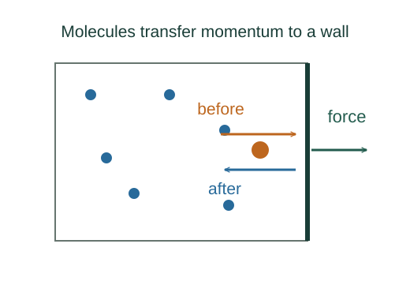
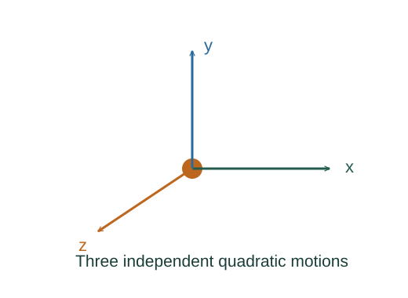

Derive pV = from molecular collisions
Pressure arises from momentum delivered to walls. The collision calculation produces a mechanical relation; an equilibrium energy–temperature relation then introduces temperature.
What the symbols mean
N: molecule count; m: one molecule’s mass; n: moles; : Boltzmann constant; R = ; : mean square speed.
When this applies
Classical dilute gas of effectively point particles, negligible intermolecular potential energy, elastic wall collisions, isotropic thermal equilibrium, and nonrelativistic motion.
From molecular impacts to the gas law
Imagine a gas inside a closed box. There is no steady push from any one molecule: each impact gives a brief kick to a wall. With an enormous number of molecules, those separate kicks average into the steady pressure we measure.
The first part of the argument connects pressure to molecular motion. Only after that connection is established will we introduce temperature.

One molecule supplies a train of impulses
Take a cube of side L and follow the component of one molecule’s motion perpendicular to a wall. An elastic reflection reverses that component of momentum. The molecule loses twice its incoming x momentum, and the wall gains the same amount.
To obtain an average force, we need the time between successive hits on this same wall. The molecule must cross the box and return, travelling a perpendicular distance of twice the box width. Dividing the impulse per hit by that round-trip time gives
Notice the squared velocity component. A faster molecule not only delivers a larger impulse; it also comes back to the wall more often. Both effects increase the force.
Many impacts become a pressure
Now add the average forces from all the molecules and divide by the wall’s area. The force contains one factor of inverse box width, while the area contains two more. Together they produce inverse volume, so multiplying the pressure by the volume leaves
The angle brackets mean an average over the molecules. At this point the result is purely mechanical: it relates pressure to motion, with no temperature in it yet.
Equilibrium accounts for the factor of three
In a gas at rest in thermal equilibrium, no spatial direction is preferred. The three squared velocity components therefore have equal averages. Their sum is the average squared speed, so the x contribution is one third of that total.
The same statement can be expressed using the average translational kinetic energy of a molecule:
This is the bridge from the collisions to energy. It does not say that every molecule has the same speed; only the averages are equal in the three directions.
Temperature enters through thermal equilibrium
We now need a statistical result that the collision calculation cannot provide by itself. Classical equipartition assigns an average energy of one half of to each independent quadratic translational term. There are three such terms, one for each direction.
Substituting that average energy into the mechanical pressure relation gives
This explains why pressure at fixed volume is proportional to absolute temperature: greater thermal energy means a greater average momentum flux to the walls.

Counting in moles gives the familiar form
Laboratory quantities are usually expressed in moles rather than individual molecules. Replace the molecule count by the number of moles times Avogadro’s constant. The product of Avogadro’s constant and Boltzmann’s constant is the molar gas constant:
The molecule form and the mole form describe the same gas. They differ only in how we count its particles.
The derivation has two distinct ingredients: momentum transfer explains the pressure, and equilibrium statistics connects molecular kinetic energy to temperature. Keeping that distinction visible makes the gas law much more than a formula to memorize.
A worked example
For one mole at 300 K in 0.025 m³, the ideal pressure is 8.314 × 300/0.025 ≈ 99.8 kPa.
Derivation behind this calculation ↗A point to keep straight
is not . Newton’s laws alone do not establish the thermal energy–temperature relation.
Check the assumptions and derivation ↗